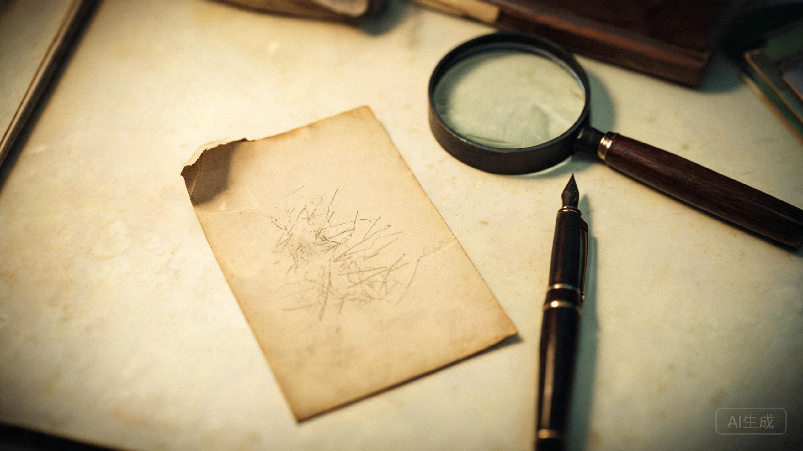

家庭合影 · 1996年 · 第四制药厂职工宿舍前
相纸背面有一行铅笔字，被反复描过。

照片背面是父亲的字。写得很慢，笔画一遍一遍描过，像怕别人认不出来。
“第三排右起第七个，是我。”那是1996年厂里的合影。父亲站在第三排，右起第七个，穿蓝色工装，脸被划掉了。划痕是新加的，圆珠笔，力很深。
“素芬，别让小默知道名单。”写这行字的时候，名单还没有被拿走。父亲已经知道名单上第三个人是谁。
“如果我不在了，把照片给她。”“她”是母亲。母亲1999年去世。照片一直夹在饼干盒里，没有给出去。